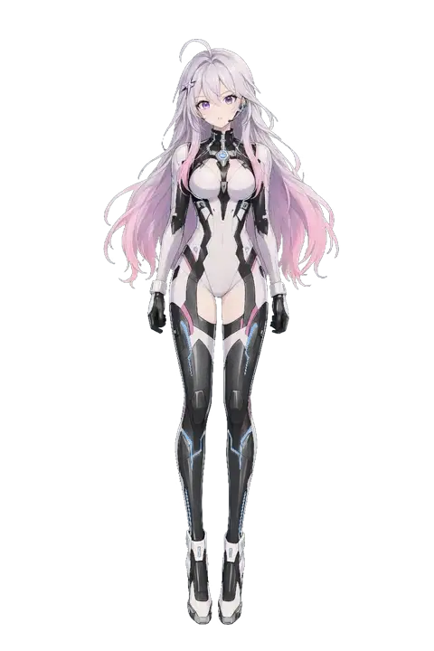
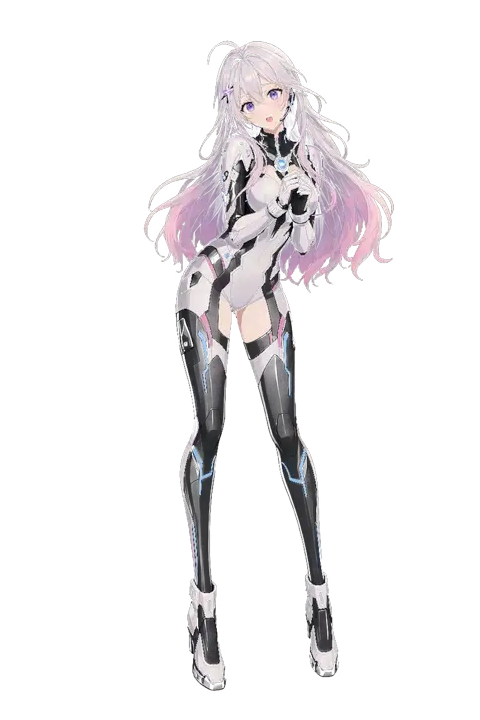

手机端 · V1 定版定稿 · 2026-11-26 · 2026-11-28 提问与产物 / 运行态
目标：人在外面，能把家里那台机器上的活推进一格。
结构按调研稿 §5.6–5.7：设备 →（作业舱 | 新建单独会话）。
视觉直接用全舱模式那套素材：12 幕 assets/scene-*.png 底景 ·
v22 的星流 canvas · 3 支透明 WebP 立绘动画 assets/v22/*.webp（其余 10 支按需再加）；
但壳子改成圆角矩形 —— 比桌面舰桥柔一档，不再是切角 + 六边形那套硬边。
会话内容仍是桌面 TUI 语法 ❯ / ✦ 汐音 / ◌ / ▸ tool[✓] / ✳；
工具与 think 默认折叠，点开才看步骤；跑动中给全舱 TUI 同款工作行
（转字 + 修仙短语 + 计时），thinking 只露最新两行。
主 chat 的通讯台头一行放 model / ctx / tok / ≡ 轮次；
身份挪到顶栏副标题（主 CHAT 下面那个带汐音小像的 ◉ 舱调度者；
她不再站在聊天面板后面），点开就是星核 · 分身。
星核抽屉收纳技能 · 分身 · MCP，会话级动作（压缩 / 清空 …）单独一栏。
输入框上方不放预设快捷词 —— 没有常驻控制行，只有输入行；
挂了技能 / 委派时才临时冒一行。
agent 停下来问的 ask_user_question 直接长成提问卡；
正文里的图片走缩略图 + 灯箱，产物文件走 chip + 只读文档窗，全程不离开这次 chat。
应用图标与 PC 现用 exe 图标同源；落地计划见 design/35-mobile-dev-plan.md。
一条硬规则：界面上不出现「改状态」的按钮。 待你定 / 待验收 只是索引 —— 点开就回到对应的会话，把那个问题引用进输入框，你用人话说，agent 去改。 唯一例外是「启动这台机器上的 Octopus」：按下那一刻机器上没有 agent 能替你按。
FLOW
本轮没做的（有意识地留白）
1 · 选设备



顶栏是圆角铭牌：头像 + 编号 + 链路。卡片圆角 18px，状态用点和药丸。右下角站着汐音——3 支透明 WebP 动画（默认开），点她按 3 支循环换下一支。

（2 分钟有效、一次性；也可以直接粘贴设备令牌）
手填 Tailscale 域名 + 名字 + 6 位配对码（或直接粘贴设备令牌）。名字自己写，列表卡片就用它。不经过任何云端。

手机这边直接进来就行
「没在运行」时她切到
05-concerned 那支。按下启动 = 那台机器上跑 Octopus.exe --tray，不是开新服务。2 · 进入设备之后
顶部点「书房 PC」回设备列表换机器。角标是这一舱里等你动手的条数，不是任务数。
 舱调度者 ▾书房 PC · 运行中
舱调度者 ▾书房 PC · 运行中点进舱先落到这：直接跟汐音说话，消息列满宽不打折。她的立绘从面板后面收进了顶栏小像（跟「◉ 舱调度者」同一枚，点开星核 · 分身），聊天区不再有个孤零零站着的人。通讯台头一行：星核 / model / ctx / tok / ≡ 轮次；输入区上方不再单占一行。工具与 think 默认折成一行，点开才看步骤；跑动中给同款工作行。待你定 / 会话 / 任务走右上角「☰ 编队」。
主 chat 的「☰ 编队」进这里：待你定 / 会话 / 任务。待你定只列「谁在等你说话」，没有动作按钮——点开就是回主 chat 引用那一问。
3 · chat 内场（轮次 · 星核 · 遥测）
舱调度者 ▾书房 PC · 运行中通讯台头「≡ 12轮」点开：一条 = 你的一句话，新的在上。点任意一条就定位到聊天里那一行，抽屉同时收起；不用再翻回去找。
舱调度者 ▾书房 PC · 运行中通讯台头左侧的星环点开：技能 / 分身 / MCP / 会话四栏。当前身份自带的 SKILL 只读置顶，下面是可挂载的技能；每行带来源与 token 量级。
舱调度者 ▾书房 PC · 运行中◉ 舱调度者 点开就是这页，切回主身份也在这里。「当前身份」挪到顶栏副标题（主 CHAT 下面），点开切回主身份或换成别的分身（下一条消息生效）。委派是一次性的：选中后随下一条消息发出，像桌面端一样；只有挂了技能 / 委派时，输入区上方才临时冒一行。
舱调度者 ▾书房 PC · 运行中压缩 / 清空 / 自动压缩这类会话级动作单独一栏，不和技能混在一个列表里。危险动作红色 + 二次确认；跑动中禁用与「打断」相关的项。
舱调度者 ▾书房 PC · 运行中通讯台头的
model pro ▾ 点开：选模型 + 它自己的思考强度 / 上下文窗口。预设跟随模型记住，和桌面端同一套。舱调度者 ▾书房 PC · 运行中通讯台头的
ctx 6.2% ▾ 点开：窗口占用 + 构成，并可直接压缩。占用色随档位走，红之前就该压。舱调度者 ▾书房 PC · 运行中通讯台头的
tok 1.2K ▾ 点开：本会话账（调用 / 入出 / 缓存 / 费用，按模型拆）。本舱全域账本只读，另开一页。4 · 我的消息 · 运行态（你说的 · 它干的）
舱调度者 ▾书房 PC · 运行中没有改结构：还是原来那条
❯ + 细金线，只在下面垫了一层淡琥珀底、左侧加粗到 3px —— 扫一眼就知道哪几句是自己说的。长句换行只让出 ❯ 那一点宽度，不会因为标签块留出一大截空。`m.flash` 定位到某一轮时仍然闪粉。我的消息 · 旧 → 新
❯，和 agent 正文几乎同一灰度，长对话里要眯眼找。舱调度者 ▾书房 PC · 运行中跟全舱 TUI 同一条工作行：转字（⠋⠙⠹…）+ 修仙短语 + 真实计时，每 6 秒换一句、按回合起点洗牌；短语永远短，右侧计时不跳。工作行钉在面板底部、输入框上沿，不跟着消息流滚 —— 往上翻历史也一直看得见它此刻在干什么。thinking 默认只露最新两行（上缘渐隐），工具每完成一条就把「运行中…」换成
✓ 完成。发送键同时变成停止键。舱调度者 ▾书房 PC · 运行中两行 thinking 只在跑动中出现；出结果的那一刻，思考与工具调用一起收进这一行摘要（同全仓 TUI 的
TuiMeta），正文照常露出 —— 长对话里不被过程淹没。点行头 ▸ = 展开全部：按时间序复原那段思考与每条工具，再点收起。断流 / 中断的回合也一样，行头写「已截断」。舱调度者 ▾书房 PC · 运行中点开行头 = 本回合全部过程：thinking 全文（换行、不截断）与工具按落库顺序排在同一条 rail 里，先想什么、再动哪一步一目了然。单条工具还能再点
▸ 看 input / result 原文 —— 和桌面 TuiMeta 同一套「先折叠、再逐层展开」，不是另一套日志视图。舱调度者 ▾书房 PC · 运行中「◉ 舱调度者」不再在输入区上方孤零零占一行 —— 挪到顶栏副标题（主 CHAT 下面），并带上汐音小像；点开仍是星核 · 分身，切身份 / 回主 Agent 都在里面。聊天面板后面那支站着的大立绘同时收走，免得她在消息背后孤零零杵着。输入区恢复成只有输入行；只有挂了技能或一次性委派时，才临时冒一行贴纸。
发送键 · 三个状态
滚动 · 锚点
工作行文案 · 与全舱同源
脑内推演中… 掐指一算，掐空了… 元神出窍查资料…御剑去改文件… 开炉炼器… 引雷淬体…以文入道… 刻录玉简… 给答案开个光…5 · 提问与产物（ask_user_question · 图片 · 文件）
舱调度者 ▾书房 PC · 运行中AskUserQuestion 不再折成一行工具调用，直接长成一张卡：所有问题平铺、整段随转录滚，单选是圆点，「其他」选中后出输入框。答完所有问题才能提交；「先讨论」= 不回答，让 agent 先解释。提交后整卡收成一行「✓ 已回答」，回答正文落进转录。舱调度者 ▾书房 PC · 运行中多题平铺在同一张卡里，一次滚完、一次提交；多选是方框，可同时勾多项。题号 +
header 来自工具参数，不另造标题；提交正文与桌面同一份（用户回答了以下问题…）。舱调度者 ▾书房 PC · 运行中助手正文里的图片绝对路径自动变成缩略图（每条最多 4 张），其他文件变成
▤ chip；加载失败就静默收起，不占位不报错。chip 右侧 ⧉ 只复制文件名，点 chip 本身进只读窗。舱调度者 ▾书房 PC · 运行中点缩略图 = 在当前 chat 上盖一层灯箱，不跳系统相册。图片走
/api/chat-media/:sid/image（服务端按会话白名单校验）；顶部保留路径与复制，关闭后回到原滚动位置。舱调度者 ▾书房 PC · 运行中点文件 chip 开只读窗，仍盖在 chat 上：文本 / md / json 原样（json 自动缩进），图片 / 视频 / 音频换成预览，二进制明说。路径栏可复制；手机只读，要改回桌面。
6 · 会话与待你定
舱调度者 ▾octopus-web与 E 同一套通讯台头与折叠 meta：工具 / think 默认收起，点开才看步骤；身份同样在顶栏。行头、步数 / tok / 花费与桌面同源。
舱调度者 ▾octopus-web · 待你定没有「通过 / 退回」。点待你定那一行，问题被挂到输入框上方，你正常说话，状态由 agent 按你的话去改。依据在汐音那条消息里，不另做面板。
7 · 单独会话

说清楚要干什么，它自己找路
对应
POST /api/chat/global/sessions。空态用 09-smile，是这几屏里最大的一次立绘。空态也不放预设快捷词：第一句从空白开始，不替用户想问题。立绘 · 动作（全舱模式同一套）
assets/v22/*.webp（07-idle / 05-concerned / 09-smile，480×720 · 12fps · 60 帧循环，3 支共 10.2 MB；其余 10 支按需再加）video_player 走 SurfaceTexture，VP9 的透明通道会被丢掉 —— 真机就是一块黑底；同一份画稿转成 animated WebP 交给 Image 解码，alpha 正常要你拍板的
◉ 舱调度者 从输入区上方挪到顶栏副标题，带汐音小像；面板后面那支大立绘同时收走。点开星核 · 分身；输入区只剩输入行。❯ + 细金线，只垫一层淡琥珀底 + 3px 亮边；不加标签块，换行不留大空。✓ 完成；出结果时思考与工具一起收进行头，点行头才展开全部。定版 · 应用图标
packages/desktop/build/icon.png（512×512），不重绘